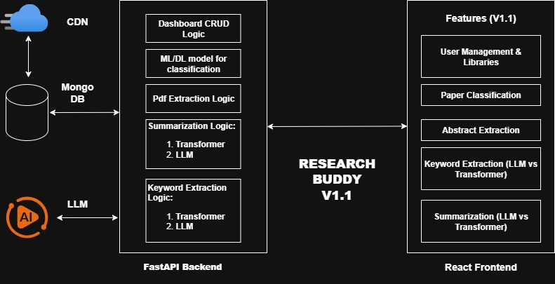

The Research Buddy project was born out of a personal need. After stepping away from research for some time, I
recently
resumed working in this space and immediately recognized the need for a system to simplify finding papers
aligned with my interests. The starting point was an ML-based
classifier for paper abstracts, giving me an immediate hint about a paper’s field before I invested time reading
it in depth.
However, my requirements soon expanded. I realized that beyond classification, I also needed summarization and
keyword extraction—tools that could provide quick insights into a paper’s content. While free tiers of
established LLMs such as Perplexity, ChatGPT, or Gemini exist, they come with limitations: they are fragmented
across platforms, and often behind paywalls for extended use. What I sought was an integrated system, built for
me, all in one place, without additional cost.
This motivation pushed me to leverage my system design and full-stack development skills to create a modular
full-stack ML/AI application.
Research Buddy v1.1 — Current Capabilities
The first official release (v1.1) of Research Buddy is capable of the following:
Abstract Extraction Extract abstracts directly from uploaded PDF research papers.
Paper Classification Predict the probable field of a paper using either a single ML/DL model or a
comparative graph of multiple models with confidence level, providing transparency in predictions.
Keyword Extraction Dual pipeline: Local Transformer model for keyword generation. Gemini LLM (via
free API tiers) for high-quality keyword suggestions. Users can compare keywords side by side for better
evaluation.
Summarization Same dual pipeline approach: Transformer + Gemini LLM. Summaries displayed side by side
for direct comparison.
User Management & Libraries A robust user authentication and library system. Users can curate personal
collections of papers. CRUD operations on papers: upload/save to CDN (e.g., AWS S3), store
title/abstract, and attach preferred sets of keywords and summaries.
Demo Video: Research Buddy v1.1 in action
Design Principles
Modularity: Both backend and frontend are structured for maintainability. Transformers or LLMs can be
swapped out with minimal overhead.
Scalability: Backend supports additional ML models and services.
User-Centric: Designed first for personal productivity, but extensible to wider research communities.
Technology Stack
Research Buddy v1.1 is built on a modern, modular, and cost-conscious technology stack:
FastAPI — Lightweight asynchronous Python backend framework, serving APIs for classification, summarization,
keywords, and CRUD operations.
React — Component-driven frontend with Material UI for a clean, responsive user interface.
MongoDB — NoSQL database to store user accounts, libraries, paper metadata, abstracts, keywords, and
summaries.
CDN (AWS S3 + CloudFront) — Reliable storage and global distribution of uploaded PDFs and related assets.
Gemini API — Integrated LLM for keyword and summary generation (leveraging free tiers; no vendor lock-in).
Kaggle & Google Colab — Cloud-based GPU environments for training and experimentation with ML/DL models.
MLflow — Framework for model lifecycle management (MLOps), enabling experiment tracking, versioning, and
reproducibility across models.
Local Transformers (Hugging Face) — Integrated for on-device keyword extraction and summarization, ensuring
independence from external APIs and providing a fallback option alongside Gemini.
Rationale: This stack balances low cost, flexibility, and scalability. Free-tier services
(Gemini, Colab, Kaggle) lower experimentation costs, while MLflow and modular APIs ensure smooth upgrades when
swapping or retraining models. AWS S3 + CloudFront provide reliable content delivery, while MongoDB ensures
dynamic user data handling.

Figure 1: Research Buddy v1.1 architecture showing backend, frontend, and ML/LLM pipelines
Future Development
Conversational Features
An open-source LLM is being fine-tuned for an integrated conversational feature.
Users will be able to interact directly with a particular paper, with dialogue grounded in the document.
Retrieval-Augmented Generation (RAG)
The dialogue will leverage RAG, ensuring context-aware and document-specific responses.
AI Agent Mode — Research Adviser
A complete AI Agent mode is envisioned as a Research Adviser, unifying existing modules:
Classification
Summarization
Keyword extraction
Comparison
Enhanced with upgraded features and proactive guidance.
Case Study: Model Training and Dataset
For this project, I initially started with the entire arXiv dataset. However, due to the very limited
computational capacity of my laptop and the restrictions of free-tier cloud resources, training quickly became
impractical and nearly impossible. This resource bottleneck was a major pain point of the project.
To mitigate this, I created a Computer Science–specific subset of the arXiv data, focusing on five categories
most closely aligned with my research interests:
cs.CV – Computer Vision
cs.CL – Computation and Language
cs.IT / math.IT – Information Theory
cs.LG – Machine Learning
cs.RO – Robotics
This reduced dataset made it feasible to train multiple models and run comparative evaluations.
Model Comparison Evaluation
To illustrate, a randomly selected abstract from the dataset (Index 387, true category cs.CL) was classified
across eight different models.
Abstract (excerpt): Current task-oriented dialog (TOD) systems mostly manage structured knowledge (e.g.
databases and tables) to guide goal-oriented conversations. However, they fall short of handling dialogs which
also involve unstructured knowledge...
True Category: cs.CL
Model Predictions:
Model
Prediction
Confidence
Notes
SVM
cs.CL
N/A
Correct prediction; lacks probability output
Multinomial NB
cs.CL
0.8139
Correct; strong performance with sparse token counts
Random Forest
cs.CL
0.8700
Correct; solid probabilistic confidence
AdaBoost
cs.CL
0.2036
Correct but very low confidence; consistent with log-odds limitations
KNN
cs.CL
0.9412
Correct; very confident, strong discriminative power in TF-IDF space
Feedforward NN
cs.CL
0.9945
Correct; highest confidence; dense input works effectively
XGBoost
cs.RO
0.4780
Incorrect; confidence near random threshold
BiLSTM
cs.CL
0.8149
Correct; captures token context effectively
Observations
7 out of 8 models correctly classified the abstract as cs.CL.
The only incorrect prediction came from XGBoost, which misclassified the paper as cs.RO.
Feedforward NN and KNN gave the most confident correct predictions.
BiLSTM performed comparably well despite requiring sequential tokenization.
AdaBoost often predicted correctly but with low confidence, a recurring limitation.
SVM classified correctly but lacks probability scores, limiting its use in confidence-based workflows.
Conclusion
Traditional models (e.g., Random Forest, Multinomial NB) still perform reliably on structured TF-IDF inputs.
Deep learning models (Feedforward NN, BiLSTM) deliver superior accuracy and confidence on clean dense
representations or sequential inputs.
XGBoost proved less suitable for this task, likely due to its inability to capture semantic and sequential
relationships in natural language.
This evaluation demonstrates that even with a reduced dataset, the system effectively serves its intended
purpose: providing quick, comparative classification results to guide paper exploration. However, to train a
generalized, field-wide classifier, much larger resources and more comprehensive data would be necessary.